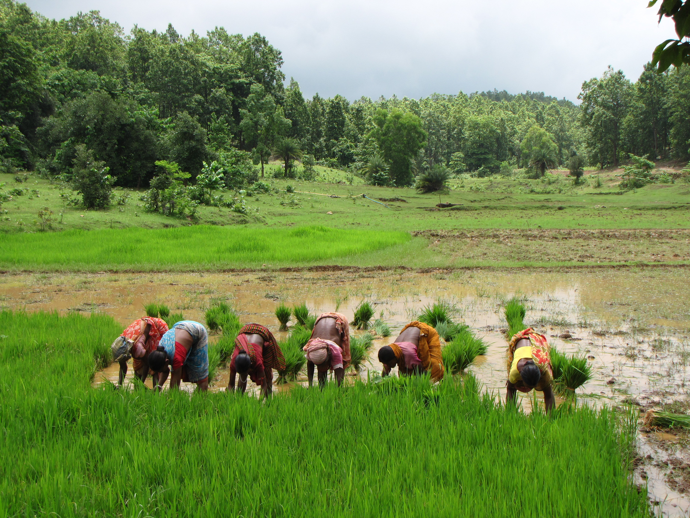

Sanjeevan
Integrated Agroforestry and Regenerative Agriculture
Sanjeevan is a collaborative initiative focused on transforming local ecosystems through Integrated Agroforestry and Regenerative Agriculture. Rooted in a systems-based approach, it combines the ecological benefits of agroforestry with the soil-restoring and climate-smart practices of regenerative agriculture.
Implementation Model

Homestead Agroforestry
Utilizing available natural resources to support nutrition, income, and ecological resilience.

Farm-Based Agroforestry
Tree cultivation with intercrops to boost both ecological and economic outcomes.

Regenerative Paddy
Promoting water-saving methods and seasonal diversification.